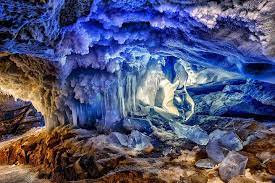
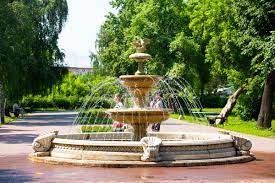
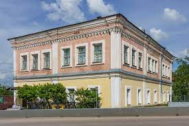

О Кунгуре
Кунгур - город в Пермском крае, Россия, расположенный примерно в 100 километрах к юго-востоку от Перми. Население города составляет около 63 000 человек.
Что посмотреть и сделать
Ледяная пещера Кунгура
Ледяная пещера Кунгура - популярный туристический объект, расположенный на правом берегу реки Сылва. Пещера имеет протяженность около 5,7 километров, из которых около 1,5 километров открыты для посещения. Температура внутри пещеры составляет около -5°C, поэтому рекомендуется надевать теплую одежду. Посетители могут пройти экскурсию по пещере и увидеть ее уникальные ледяные образования.
Парк имени Ленина
Парк имени Ленина - это крупнейший парк в Кунгуре, расположенный в центре города. В парке есть множество дорожек для прогулок, аттракционов для детей и мест для пикника. В теплое время года здесь проводятся различные мероприятия, такие как концерты и фестивали.
Музей краеведения
Музей краеведения - это музей, посвященный истории и культуре Кунгура и его окрестностей. В музее можно узнать о древних обычаях и традициях, а также о природе и геологии региона. В коллекции музея более 40 000 экспонатов, включая археологические находки, иконопись и предметы быта.